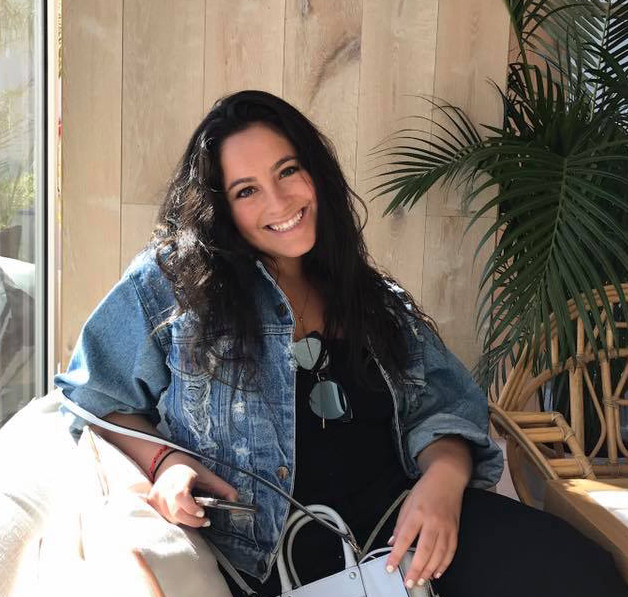
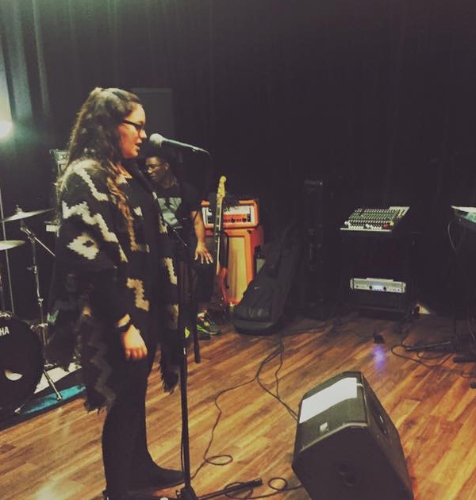
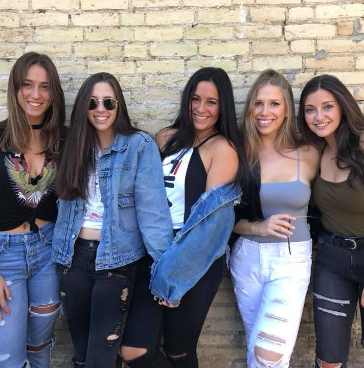
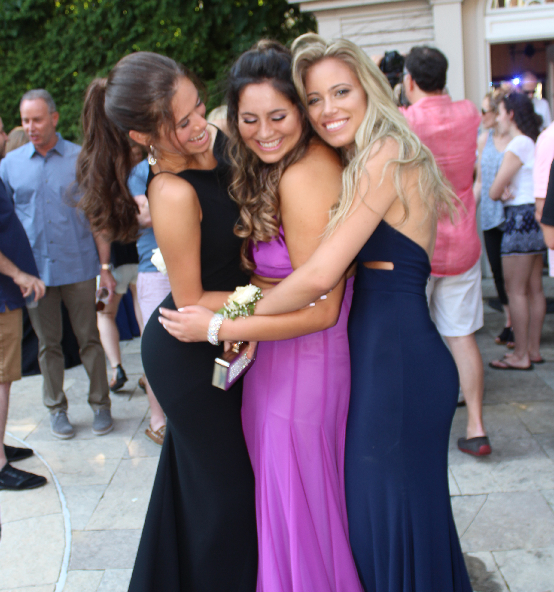
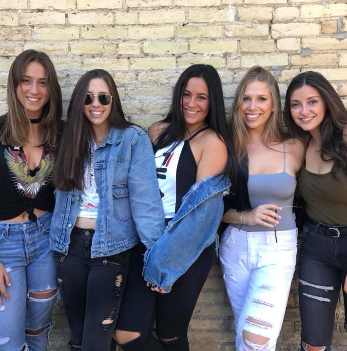
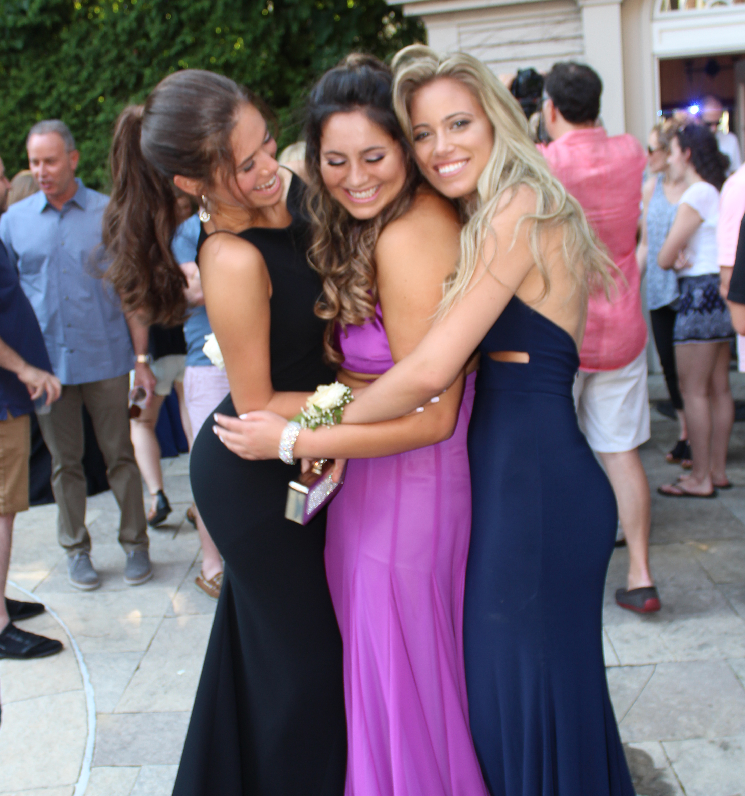

About Me

My name is Natalie Soberano and I am a second-year student at Western University in the Media,
Theory and Production program in the faculty of Information and Media studies that is combined with
Fanshawe College. This website that I am creating will give you a sense of who I am and essentially
the things I like to do and the people I love.
Hobbies
Singing, dancing, shopping, cooking, traveling, listening to music and bing watching tv are just a
few of the things I love to do. When I was young, I dreamed that one day I would be a famous singer,
actress, dancer. I would perform “shows” for my family members, not letting them leave the house until
I was done. At the age of eight, I started singing lessons and till today is still something I am very
passionate about. I started dance lessons at the age of two and started competitively dancing at the age
of nine. I competed in many styles such as Jazz, Tap, Lyrical and Musical Theatre. I still hold the dream
of becoming a famous performer, I am certain it will happen one day!

Family & Friends
 



 My family is a very important part of my life. I am the youngest of my blended family, by a lot.
I have four older half-siblings, consisting of three sisters and one brother. In addition, I have
three brother-in-laws, two nieces, and two nephews. I am often told that I am the glue that bonds
my family together, a cherished role I take pride in. My friends are also a huge aspect of my life.
I have a very close friend group, most of whom I have known since my middle-school or elementary
school days. I can always go to my friends for anything.
My family is a very important part of my life. I am the youngest of my blended family, by a lot.
I have four older half-siblings, consisting of three sisters and one brother. In addition, I have
three brother-in-laws, two nieces, and two nephews. I am often told that I am the glue that bonds
my family together, a cherished role I take pride in. My friends are also a huge aspect of my life.
I have a very close friend group, most of whom I have known since my middle-school or elementary
school days. I can always go to my friends for anything.